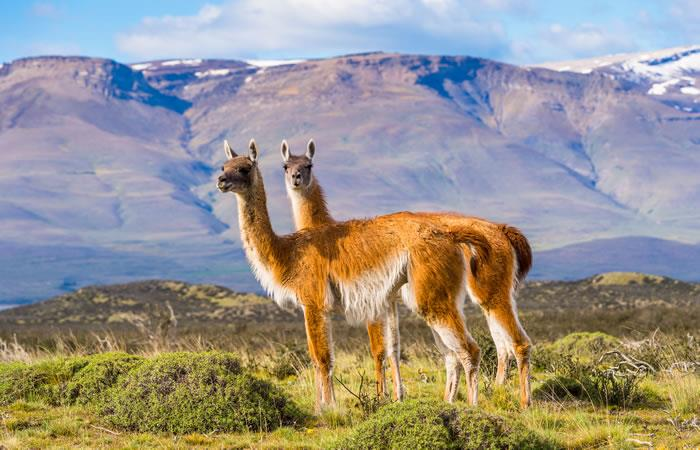
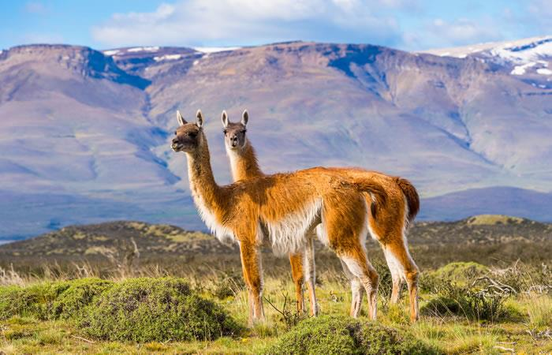

un poco de
flora de bolivia
La vegetación de Bolivia es extraordinaria y
la mayor parte de especies de su flora se centra
en la selva Amazónica. Bolivia se sitúa en la
quinta posición en Sudamérica en cuanto a diversidad
de especies de plantas, y la 10ª en el mundo, según
su clasificación taxonómica y el número de especies
endémicas que presenta. Y es que, ¿te has preguntado
alguna vez cuántas especies de plantas hay en Bolivia?
La respuesta es más de 40.000 especies de flora, parte
importante de las cuales son endémicas. Un gran porcentaje
de esta diversidad de plantes se encuentra en la zona de
los Andes. A lo largo de la extensión de este país, se
encuentran bosques de tipo húmedo subtropical, montano
semihúmedo, bajo semihúmedo, bajo semiárido y el bosque
de Yungas. Destacan también los humedales, la puna, la
sabana y la selva tropical.
vea el siguiente video
 
